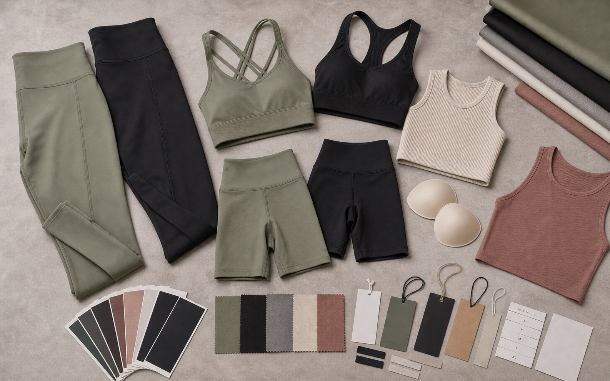

Style minimum
The number of units needed to set up, cut, sew, inspect, and pack one construction or base pattern.

Buyer guide
MOQ is not just a factory number. It can be set by a style, fabric lot, color, decoration process, label, packaging component, or the way sizes are divided.
Direct answer
The order minimum usually comes from the least flexible component in the product plan. A factory may be able to sew a small quantity, while custom-dyed fabric, seamless knitting, molded parts, special trims, woven labels, or printed packaging require a larger production batch. Ask for the MOQ at style, color, material, decoration, and packaging level instead of requesting one number for the whole order.
The number of units needed to set up, cut, sew, inspect, and pack one construction or base pattern.
The quantity required by an available fabric lot, a custom dye batch, a print run, or a specially knitted material.
The quantity assigned to each colorway. More colors divide the same total order into smaller production groups.
The supplier minimum for labels, hangtags, elastic, hardware, logo applications, polybags, boxes, or barcode stickers.
MOQ pressure
The practical question is not simply "How low is your MOQ?" It is "Which part of this product plan determines the minimum, and what compatible option changes it?"
| Product choice | Why it adds MOQ pressure | Lower-risk planning option |
|---|---|---|
| Custom-dyed fabric | The mill or dye house may need a dedicated batch for one material and color. | Start with stocked fabric colors, consolidate styles onto one compatible material, or reserve custom colors for a later repeat. |
| Seamless construction | Machine setup, yarn allocation, size programming, and color can create a separate production group. | Reduce the number of silhouettes and colorways, or compare cut-and-sew options for the first launch. |
| Many colorways | Each color divides fabric, cutting, decoration, labels, inspection, and packing into smaller runs. | Launch core colors first and use artwork, trims, or packaging to create variation where practical. |
| Complex decoration | Embroidery, silicone badges, specialty transfers, reflective details, or all-over print may have their own setup and material needs. | Use one repeatable logo method and limit placements until the sales mix is known. |
| Custom trims and hardware | Branded elastic, zipper pulls, molded parts, drawcord ends, or special pads may be purchased from separate suppliers. | Select compatible standard components and customize the visible brand elements first. |
| Retail packaging | Printed bags, boxes, inserts, hangtags, and barcode systems can each have a different supplier minimum. | Use standard bags with branded stickers or inserts, then add fully printed packaging once volumes justify it. |
| Wide size and SKU range | A large style-color-size matrix spreads units thinly and increases sorting and packing work. | Build the size ratio from customer evidence, keep early color choices focused, and provide a clear SKU breakdown. |
Launch routes
These routes do not promise a specific quantity. They show how to reduce the number of independent production variables before asking a supplier for an exact minimum.
Select an existing base style and available material, then customize logo placement, neck or care labels, hangtag, and simple packaging. This keeps the number of new components low.
Develop the pattern and construction while using a material and color the supplier can source without a dedicated fabric program. Focus the first order on a small number of coordinated styles.
Develop fit, material, colors, trims, artwork, labels, and packaging as one connected program. Confirm each component minimum before finalizing the style-color-size matrix.
Approve fit and product demand first, then add custom fabric, hardware, extra colorways, or premium packaging to selected styles in a repeat order.
Important distinction
A development sample tests the product specification. It does not prove that every material or component is available at the same quantity for bulk production.
Quote inputs
A precise product breakdown lets the supplier identify the real constraint and suggest alternatives without quietly changing your design.
Include reference images or style codes and identify whether each item is a new development or a proven base style.
Show units by style, color, and size rather than giving only the total collection quantity.
Mark stocked fabric, custom color, special knit, print, performance requirements, and any acceptable alternatives.
Provide logo files, placement sizes, application methods, labels, hangtags, barcodes, and packaging references.
Tell the supplier which details must remain and which colors, trims, materials, or packing methods can change.
Ask which item sets the minimum, whether leftovers apply, and what changes would make the order plan feasible.
Continue planning
FAQ
It may be possible when the order uses proven styles, available fabrics, focused colors, repeatable decoration, and simple packaging. The supplier still needs to check the minimum for each material and component.
It can, depending on the method and supplier. A standard heat transfer may be easier to arrange than custom elastic, embroidery, molded badges, multiple placements, or specialty reflective applications.
Often yes, but the total quantity is not always interchangeable across colors. Ask for the minimum per fabric color, style colorway, decoration color, and any color-specific trim or packaging.
Send the product list, reference images or tech packs, total quantity, style-color-size split, fabric direction, logo files, label and packaging plan, delivery market, and a clear list of flexible choices.